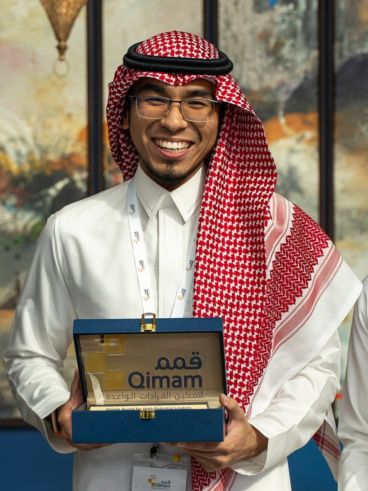
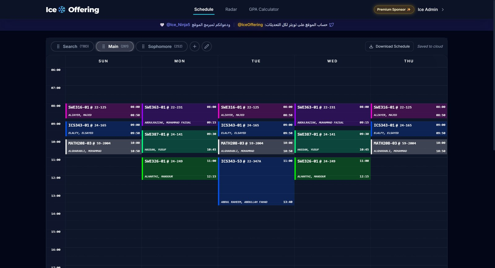
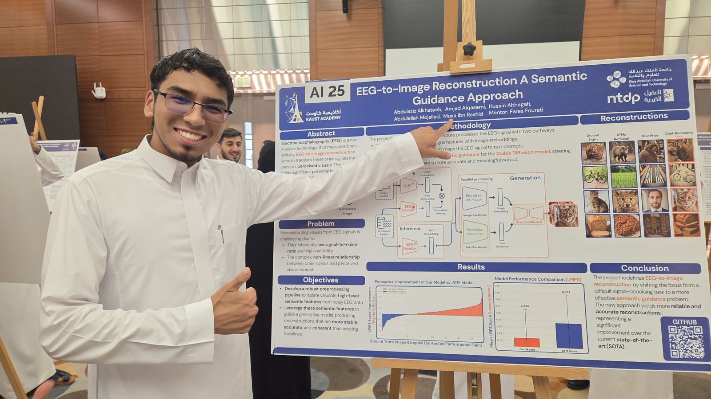

// B.Sc. Software Engineering — KFUPM — 2024–2027
Musa Ibn Rashid
SWE @ KFUPM — AI, shipped products, and 4,000 users who didn't ask for a beta.
› Welcome.
› whoami
- 0 accounts on Ice Offering
- 0 page views in 15 days
- 0 of 500,000+ graduates, 2023
- 0 students mentored online
01About me

I am a Software Engineering student at KFUPM, which I started after skipping the Preparatory Year through placement tests. Since then my work has fallen into two piles: products students actually use, and AI systems.
Ice Course Offering is the product — a course-scheduling and real-time section-tracking platform for KFUPM students, built in Next.js, TypeScript and Firebase. In the 15 days after its V2 launch it reached 4,000+ accounts and 100,000+ page views. The AI work is mostly research: at the KAUST AI Summer Program my team reframed EEG-to-image reconstruction from a signal-denoising problem into a semantic-guidance one, using the EEG signal to steer a text-guided diffusion model rather than decode pixels directly. It beat the ATM baseline on perceptual similarity and took first place.
These days I teach Computer Vision, Prompt Engineering and Applied Generative AI at SDAIA Academy, and I am a QA engineering intern at Sawt working on Arabic voice AI delivered to government and enterprise clients — requirements analysis and test design, not just bug reports. Before that I was Vice President of the KFUPM Computer Club, where I ran 35+ events on an 80,000 SAR budget.
- Location
- Dhahran, Saudi Arabia
- GPA
- 3.5+ / 4.0
- Languages
- Arabic (native), English (native)
- Focus
- AI systems, web products, QA
02Skills
AI & Machine Learning
Frameworks
Tools
03Projects

Web product
Ice Course Offering
A course scheduling and real-time section tracking platform for KFUPM students. It lets students build a timetable and react fast when a closed section opens up. Within 15 days of the V2 launch it reached 4,000+ accounts, 21,000+ visitors and 100,000+ page views.

AI research · KAUST
EEG-to-Image Reconstruction
A team research project that reconstructs what a person is looking at from their EEG signals. We reframed the task from direct signal decoding into semantic guidance for a text-guided diffusion model, which beat the ATM baseline on perceptual similarity (LPIPS 0.729 versus 0.774, lower is better) and took 1st place in the KAUST AI Summer Program.
› open slides/day-1.html
› 5 decks · 6 notebooks · 5 activities
› wifi --off
✓ still works offline
› 5 decks · 6 notebooks · 5 activities
› wifi --off
✓ still works offline
Teaching · SDAIA Academy
Applied Generative AI Course
The full course site I built and taught at SDAIA Academy in August 2026: five HTML slide decks, six Colab notebooks, five scored browser activities, a pre/post test and a project brief with its rubric. Plain HTML, CSS and JavaScript with nothing loaded from the network, so every page works with the venue wifi off.
› pretest --start
› 5 days · English + Arabic decks
› build-lab --with-agents
✓ scores stay on your device
› 5 days · English + Arabic decks
› build-lab --with-agents
✓ scores stay on your device
Teaching · SDAIA Academy
Prompt Engineering & Responsible AI
A five-day course, from deciding what should be handed to AI at all to building with context files and working with agents. It ships English and Arabic slide decks, interactive browser activities with a pre-test, teaching notes and the sample project used in the build labs.
› clean "SP *MCD_2938_RYD"
› exact → fuzzy → vector match
› merchant: McDonald’s · food
✓ report written in Arabic
› exact → fuzzy → vector match
› merchant: McDonald’s · food
✓ report written in Arabic
Hackathon · Amad 2026
Khawarizm — AI Finance Engine
Turns messy Saudi bank transaction strings into clean, categorised transactions, then writes a monthly report and answers budget questions in Arabic. Deterministic first, LLM last: matching does the heavy lifting, and the LLM only phrases numbers that are already computed, so it never invents them.
› git init prototype
› npm run build
› ship --before-deadline
✓ 3 hackathons
› npm run build
› ship --before-deadline
✓ 3 hackathons
Hackathons
Hackathon Prototypes
A run of rapid prototypes built under deadline at Streamathon, KSAU-HS and Sharqiyah hackathons — each one scoped, built and demoed within the event window. Earlier in the same vein, a game built for the KFUPM GameJam took 1st place nationally in 2024.
› npm run start:dev
› POST /cms/programs
› GET /discovery/programs?q=
✓ CMS and Discovery decoupled
› POST /cms/programs
› GET /discovery/programs?q=
✓ CMS and Discovery decoupled
Backend
Thmanyah Backend Assessment
A content backend in two parts: an internal CMS for creating, editing and deleting programs, and a public Discovery API for listing and searching them. Built as one NestJS app whose CMS and Discovery modules share a domain module but never depend on each other.
No projects match .
Try a different word or category, or clear the filters to see everything.
04Live from GitHub
Every public repository on my GitHub, fetched live from the GitHub REST API — course work, hackathon forks and experiments included.
Loading repositories…
05Experience
-
Jun 2026 — Present
Quality Assurance Engineer Intern
Sawt
QA across the full cycle on Arabic voice AI systems delivered to major government and enterprise clients.
- Requirements analysis before a single test is written.
- Prompt reviews of the voice agents' system instructions.
- Test scenario design, execution and bug reporting.
-
Jun 2026 — Present
AI Instructor
SDAIA Academy
Instructed courses in Computer Vision, Prompt Engineering and Applied Generative AI.
-
Aug 2025 — Feb 2026
Vice President
KFUPM Computer Club
Led execution of 35+ events across AI, software engineering, fintech and cybersecurity, reaching 2,500+ attendees.
- Managed cross-functional teams in PR, marketing, technology, logistics and finance.
- 600,000+ impressions and 10+ collaborations secured.
- Managed an 80,000 SAR budget, with a further 180,000 SAR planned for the second term.
-
Aug 2025 — Present
Conference Manager
KFUPM KIKX
Led conference-day operations for 10+ conferences of up to 2,500+ attendees, coordinating 75+ volunteers per event.
-
Jun 2025
Fellow
Qimam Fellowship Program
Selected as 1 of 50 students from 18,000+ applicants (top 0.3%) for the Kingdom's most competitive leadership program.
- Executive training.
- One-on-one mentorship with senior leaders.
- Company immersions and a national peer network.
-
2021 — Present
Academic Mentor & Educational Content Creator
Independent — X and Telegram
Reached 35,000+ students across Saudi Arabia with guidance on Qudrat, Tahsili, KFUPM freshman courses, KAUST, Qimam and tech careers.
06Education
B.Sc. Software Engineering
King Fahd University of Petroleum and Minerals (KFUPM)
- GPA 3.5+ / 4.0
- Skipped the Preparatory Year through placement tests, ranking in the top 3% of incoming students.
- Selected as a KFUPM Student Affairs 2025 mentor, supporting 200 incoming Skip-Prep and Orientation students.
AI Summer Internship
KAUST
- Selected as 1 of 100 participants from 15,000+ applicants across multiple competitive stages.
- Studied and applied computer vision, reinforcement learning and natural language processing.
07Awards & Certifications
-
01
Ranked #1 nationally — Saudi National High School, Class of 2023
First out of 500,000+ graduates nationwide with a perfect 100%.
-
02
1st Place — KAUST AI Summer Program
For the EEG-to-image reconstruction project using semantic guidance.
-
03
1st Place Nationally — KFUPM GameJam Hackathon, 2024
National winner among competing university teams.
-
04
HarvardX Professional Certificate — Computer Science for Game Development
Completed at age 15.
08Contact
Open to internships, collaboration on AI or web projects, and conversations with students trying to break into tech. The fastest route is email.